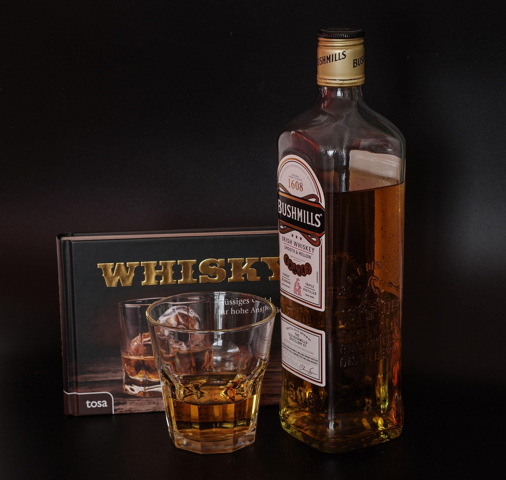
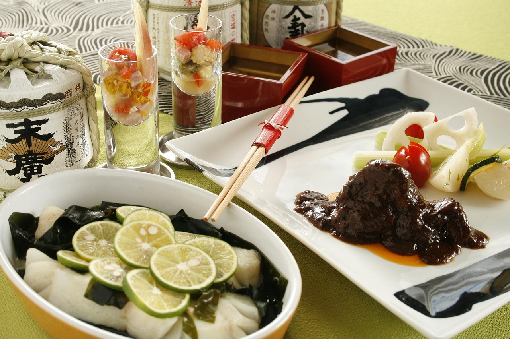
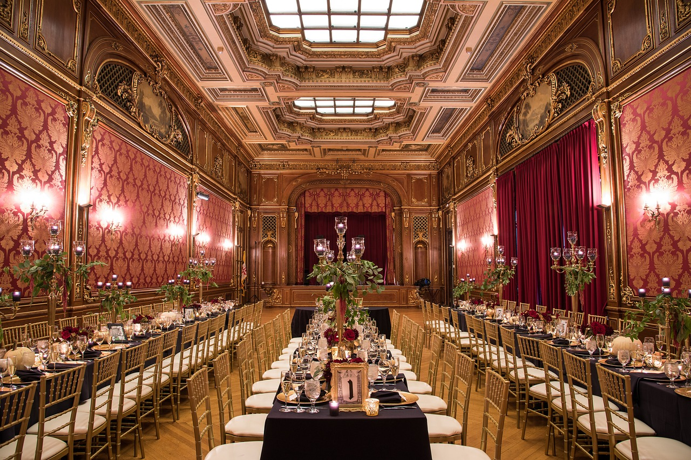

Types of alcohol


- 


Moderate alcohol consumption
enjoy
お酒を囲んで友達や家族と会話を楽しんだり、笑い合ったりすることで、絆を深めることができます。
大切な時間を分かち合う

cook
ワインやビール、ウイスキーなど、お酒と料理の相性を楽しむことができ、食事の楽しみが増します。
心豊かな食卓

relax
アルコールにはリラックス効果があり、緊張を解きほぐして心地よい気分を作り出すことができます。
心地よい休息の時間

free
普段は遠慮して言えないことや感じていることを、自然に話すことができるようになる場合もあります。
気楽に話せる時間

sleep
少量のお酒はリラックス効果を高め、眠りやすくなることがあります。ただし、飲みすぎには注意が必要です。
静かな夜の始まり

celebration
結婚式、誕生日、昇進などの場でお酒を楽しむことで、祝いの雰囲気を盛り上げ、思い出を作ることができます。
特別な瞬間を共に

fellow
お酒を飲む場では、社交的な雰囲気が生まれやすいため、新しい人と自然に会話を始めやすくなります。
共に過ごす最高の瞬間

blow of stream
仕事や日常生活のストレスをお酒で軽減することができ、気分転換ができる場合があります。
日常を忘れる瞬間

positive
適量のアルコールは気分を上げる効果があり、ポジティブな気持ちになりやすく、楽しさが倍増することがあります。
楽しさが溢れるひととき
CONTACT
お酒トーク、シェアしませんか？
>当サイトでは、お酒に関する情報や楽しみ方を紹介しています。ワインやビールの楽しみ方についての疑問や相談はこちらからどうぞ！ どんな小さな質問でも、安心してメッセージしてください。
また、お気に入りのお酒やイベントの感想を教えてください！ みんなの楽しみ方をシェアしてくれると嬉しいです